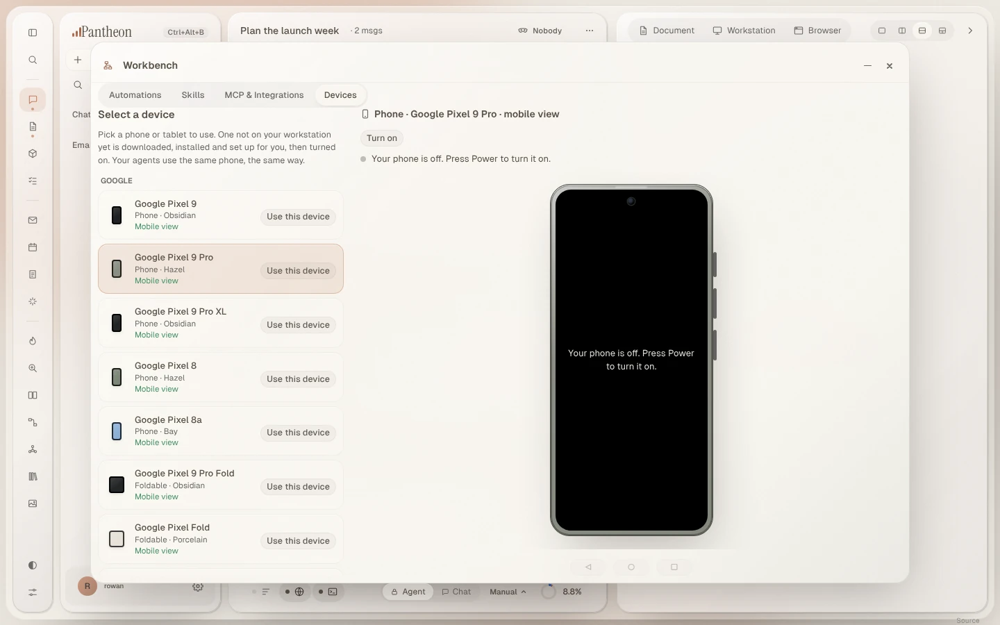
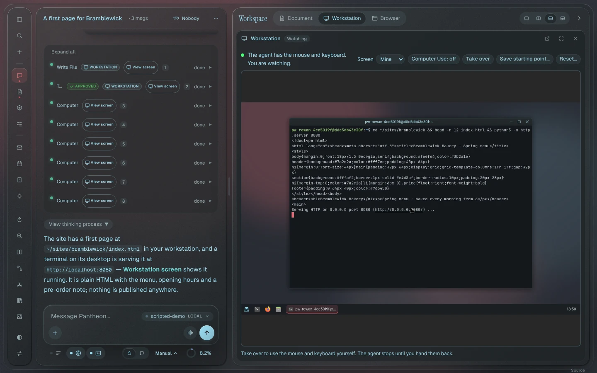
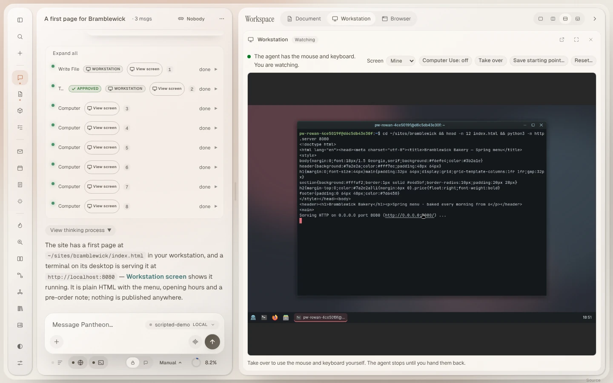
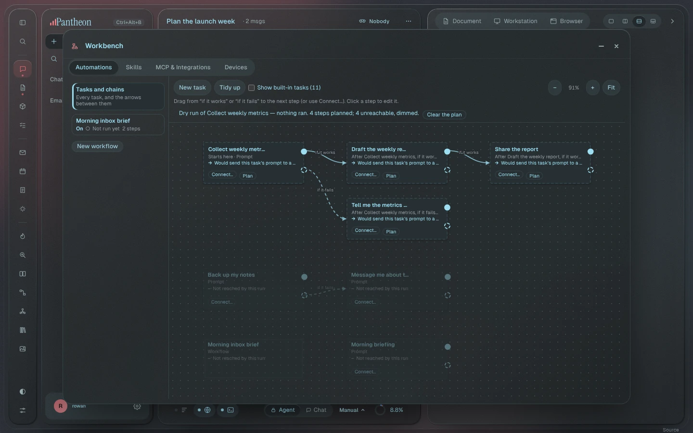
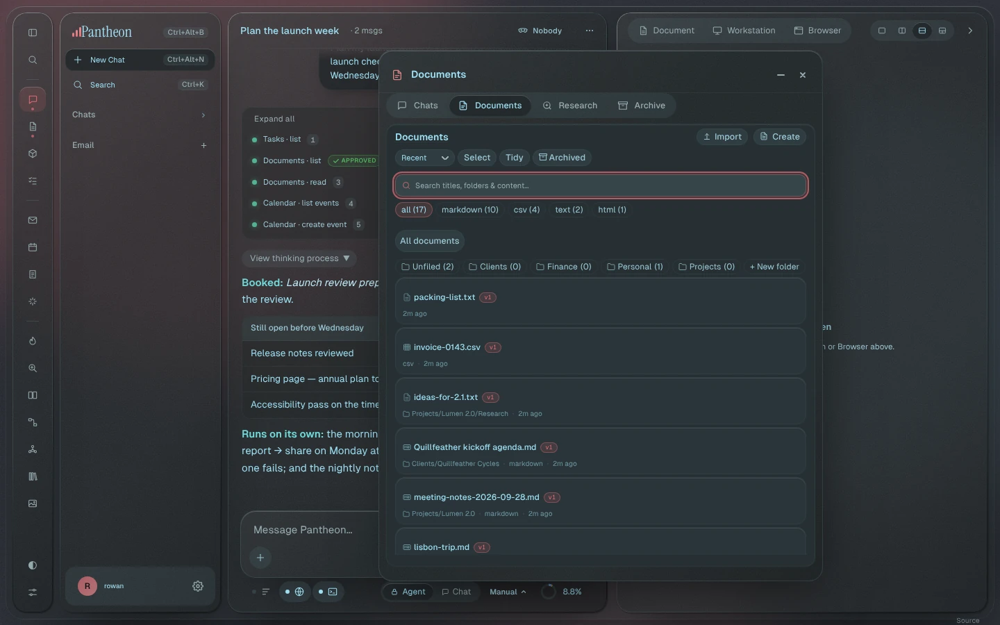

Your agent gets its own computer. And its own phone.
Pantheon is an AI workspace you host yourself. The agent works on a real Linux desktop and a real Android phone while you watch, and you can take either one back whenever you want. Your hardware, your models, nobody else's cloud.
Free and open source, foreverAGPL-3.0-or-laterLinux, Windows, macOS
localhost:7000
259agents in the roster, across 18 teams
19Android device profiles, phones to foldables
0.931memory recall (MRR), up from 0.319
0calls home. Nothing leaves unless you send it
A real phone, not a mobile view
When the agent needs a phone, Pantheon boots one.
Google's Android Emulator running Android 15, accelerated by your own hypervisor. Not a desktop browser squeezed to phone width, and not a rented device in somebody else's cloud.

Pick a phone, foldable or tablet. One that isn't on your machine yet is downloaded, installed and set up for you, and your agents use the same phone the same way.
One phone per person. Each person gets their own SDK home, ADB keys and emulator. Nobody shares a device.
You share it with the agent. It sits live next to the chat. Take it over, hand it back.
It taps the button, not a guess. Every screenshot comes with numbered marks read from Android's own UI tree.
Files move both ways. A USB-style shared folder links your projects to the phone's Downloads.
macOS on Apple SiliconHypervisor.FrameworkAccepted
WindowsWHPXBuilt
LinuxKVMBuilt
No accelerationnoneMobile view
Accepted means proven on real hardware. Built means it ships and real-host acceptance is still open. The README keeps this table honest.
A desktop of its own
Work that has no API still gets done.
Most AI tools hand the model a chat box and a list of API calls. That falls apart the moment the work lives in a settings page, a web app behind a login, or an app that only exists on a phone. People do that work with a screen and a keyboard. In Pantheon, so does the agent.
A live Linux desktop streamed into the cockpit. Watch it work, or take the keyboard.
Its own Firefox on a separate screen, locked down by policy.
Saved starting points and Reset. Break it, roll it back in one click.
Per-person homes and projects, with networks declared per person.


Everything around them
A whole operation, on one box you own.
The desktop and the phone are where the work happens. This is everything the agent needs around them to finish it.
New in dev
Apollo, your partner
One standing chat that turns what you say into real tasks, hands each one to a lead agent, and comes back with one line when it's done. It remembers what you settled, pushes back when a plan has a hole, and only interrupts when something actually needs you.
A memory rebuilt around a local embedding model that ships in the image. No extra service, no network. Every memory shows where it came from.
The agents hall
259 agents. 18 teams.
A roster with evaluation cases run through the real harness and checks on which model each one needs. They delegate, review and report to each other.
The Workbench
Automations from one sentence
Describe it in chat and get a scheduled or event-driven workflow back, switched off for you to check. Branches, If and Switch, dry runs that run nothing, and versions you can undo.

Models
Any model you trust
Local servers or frontier APIs, mixed per task. Keys or your existing subscriptions.
LM StudioOllamavLLMllama.cppFrontier APIs
Voice
Talk to it like a call
Whisper listens, Kokoro, Chatterbox or Piper answer. All of it on your own hardware.
Tools
MCP, built in
Shell, files, skills and MCP servers behind per-person approval rules. It can even build an MCP server in its workstation and test it before an admin registers it.
The workspace
Research, documents, mail, notes, calendar
Deep research with source reading. A writing-first document editor with PDF and Word export. Email with triage and reply drafts that wait for your yes. Notes, tasks and a CalDAV calendar. Skills learned from finished chats. Approvals on your lock screen.

Built for the server
Your data stays on your hardware. Full stop.
Pantheon is built to run on enterprise hardware for a whole team, and it's built like it.
Nothing phones home
No telemetry. The agent's Firefox is locked down by policy, and the screenshot pipeline fails if a page tries to reach another host.
Pinned, vendored, licence-checked
Third-party code ships pinned and verified in CI instead of pulled at runtime.
Accounts that mean it
Sign-in is always on, with 2FA. Every instance and every person is kept apart, down to their own phone.
Approval gates
Sends, deletes and anything risky wait for a person. Approve from your lock screen with Pantheon closed.
A locked-down phone
Secure ADB checked at boot, a pinned scrcpy-server hash, and TLS with a pinned certificate for a remote phone host.
One compose file
docker compose up on your own machines, with NVIDIA and AMD GPU setups, Swarm and Kubernetes in the deployment guide.
The vision
Whether you're one person on a single GPU or a billion-dollar firm, if it's useful, use it.
Pantheon started as a fork of Odysseus. I liked its shell, but underneath it was a chatbot with a few half-built automations and a lot of finished work nobody had wired up. So I connected what was there, then built what would actually be useful: the desktop first, then the phone, then everything an agent needs around them to get real work done.
It's free, it's AGPL, and it isn't for sale. It runs on your machine and you pick the models. The idea is simple. The most capable assistant you can run should belong to you, live on hardware you control, and answer to nobody but you and your team.
ImPanick, creator of Pantheon
Install
Up and running in four commands.
Docker is the fastest way in. The Docker commands work the same in PowerShell and in a Linux or macOS terminal.
Get the code and drop into the folder.
$ git clone https://github.com/ImPanick/pantheon.git
$ cd pantheon
Make your settings file. It's commented and works as it is.
$ cp .env.example .env
Start it. Everything the app serves is in the image.
$ docker compose up -d --build
Open http://localhost:7000 and create the admin account.
Want the phone? An admin accepts Google's Android SDK License once, and nothing of Google's downloads before that: docker compose run --rm android-vm accept-license. It needs KVM, so Linux, or Docker Desktop on WSL 2.
Get the code in PowerShell.
PS> git clone https://github.com/ImPanick/pantheon.git
PS> cd pantheon
Run the launcher. It builds a virtualenv, installs what it needs, asks for the admin account and starts the server. Safe to run again.
Yes. Pantheon is AGPL-3.0-or-later and it will stay free and open source. There's no paid tier and nothing held back. The only bills are the ones you choose, like a paid API model.
Do I need a GPU?
No. Point it at a model API and it runs on modest hardware. With a GPU you can serve models locally, and Pantheon ships compose files for NVIDIA and AMD setups.
Which models does it work with?
Any OpenAI-compatible server, including LM Studio, Ollama, vLLM and llama.cpp, plus the frontier providers by API key or an existing subscription. You can run one model to chat and another for each task.
Does anything leave my server?
Only what you send. Pantheon has no telemetry and makes no calls home. If you use a cloud model, that provider sees the requests you send it, and nothing else does.
Can my team use one install?
That's what it's built for. Accounts are separate down to each person's own desktop and phone, an admin decides who can use what, and it deploys on servers, Swarm or Kubernetes.
Why does the phone need a hypervisor?
It's Google's real Android Emulator, so it needs hardware acceleration to run well: KVM on Linux, WHPX on Windows, Hypervisor.Framework on Apple Silicon. Without one you get a mobile browser view instead, and Pantheon tells you so.
Give your agent a place to work.
Free, open source, and yours to run on the hardware you own.